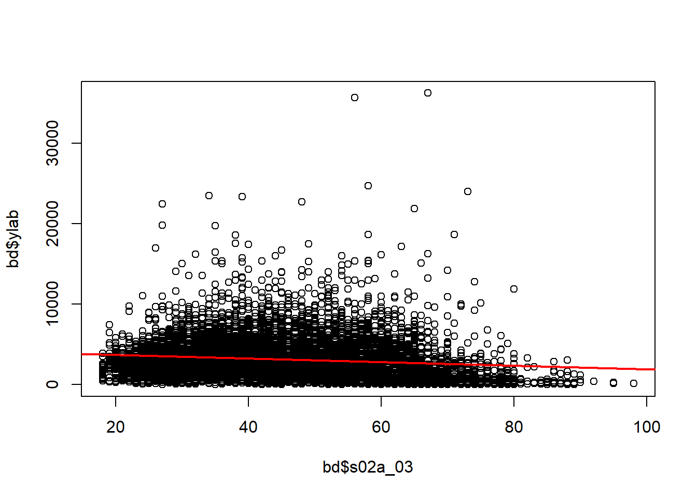
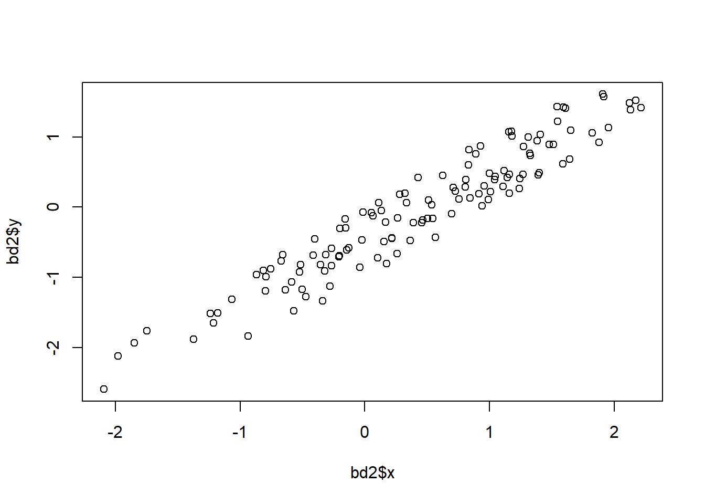
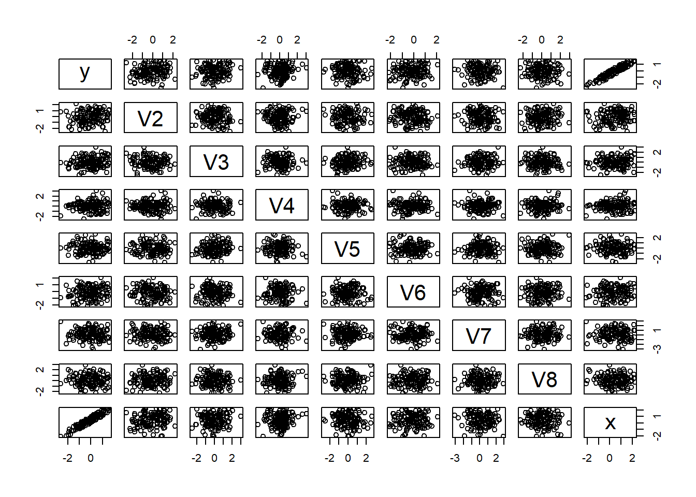

4 Regresión
\[y=f(x_1,x_2, \ldots)\]
- \(y\) Variable de resultado, dependiente, solo tenemos a una \(y\).
- \(x_1, x_2, \ldots\), variables de control, independientes.
A partir de estas variables:
- ¿Cuál es la relación de \(x\) sobre \(y\)?
- Lineal
\[y_i=\beta_0+\beta_1 x_1+\beta_2x_2+\ldots+\epsilon_i\] > Nota: Diferenciar que la regresión busca establacer relaciones basadas en los datos y no asi un proceso causal.
+ Polinomial
+ Etc; No lineal,- Conocer la naturaleza de \(y\) y las variables \(x\)
- \(Y\) es cuanti (real), \(X\) cuanti.
- \(Y\) es cuanti (discreta >= 0), \(X\) cuanti.
- \(Y\) es cuali nominal binario, \(X\) mixtas.
- \(Y\) es cuali ordinal, \(X\) mixtas.
4.1 Regresión lineal
4.1.1 Paso 1: Base de datos
4.1.2 Paso 2: Establecer la relación de interés.
- \(Y\) Ingreso laboral puede ser un buena opción
- \(X\) el resto, pueden ser basadas en un modelo teórico o buscadas a partir de un proceso de minería de datos
\[IngresoLaboral=f(edad,sexo,educación,...)\]
4.1.3 Paso 3: Definir el modelo a utilizar
OLS, MCO. Modelos lineales
##
## Call:
## lm(formula = ylab ~ s02a_03, data = bd)
##
## Coefficients:
## (Intercept) s02a_03
## 4112.16 -21.84\[ylab_i=\beta_0+\beta_1edad_i+\epsilon_i\]
\[E[ylab_i]=4112.16-21.84*edad_i\]

##
## Call:
## lm(formula = ylab ~ s02a_03, data = bd)
##
## Residuals:
## Min 1Q Median 3Q Max
## -3505 -1545 -482 876 33548
##
## Coefficients:
## Estimate Std. Error t value Pr(>|t|)
## (Intercept) 4112.155 81.267 50.60 <2e-16 ***
## s02a_03 -21.841 1.744 -12.52 <2e-16 ***
## ---
## Signif. codes: 0 '***' 0.001 '**' 0.01 '*' 0.05 '.' 0.1 ' ' 1
##
## Residual standard error: 2380 on 9296 degrees of freedom
## (118 observations deleted due to missingness)
## Multiple R-squared: 0.01659, Adjusted R-squared: 0.01649
## F-statistic: 156.8 on 1 and 9296 DF, p-value: < 2.2e-16## (Intercept) s02a_03
## 4112.1555 -21.8413## 0.5 % 99.5 %
## (Intercept) 3902.7837 4321.527
## s02a_03 -26.3346 -17.348#mejorar el modelo
m2<-lm(ylab~s02a_03+aestudio+tothrs+ynolab+s02a_02+area+cob_op,data=bd)
summary(m2)##
## Call:
## lm(formula = ylab ~ s02a_03 + aestudio + tothrs + ynolab + s02a_02 +
## area + cob_op, data = bd)
##
## Residuals:
## Min 1Q Median 3Q Max
## -5808.3 -1100.1 -325.8 641.1 30954.9
##
## Coefficients:
## Estimate
## (Intercept) 4.576e+03
## s02a_03 2.609e+00
## aestudio 7.101e+01
## tothrs 1.681e+01
## ynolab 2.201e-02
## s02a_022.Mujer -7.252e+02
## areaRural -4.366e+02
## cob_opDirectivos Adm. Pública y Empresas 5.826e+01
## cob_opProfesionales cientificos e intelectuales -9.262e+02
## cob_opTécnicos de Nivel Medio -2.022e+03
## cob_opEmpleados de oficina -2.561e+03
## cob_opTrabajadores de Servicio y Vendedores -2.913e+03
## cob_opTrabajadores en Agricultura, Pecuaria,Pesca y otros -4.003e+03
## cob_opTrabajadores de la Construcción, Ind. Manufacturera y Otros -2.971e+03
## cob_opOperadores de Instalaciones y Maquinarias -2.547e+03
## cob_opTrabajadores No Calificados -3.238e+03
## Std. Error
## (Intercept) 3.832e+02
## s02a_03 1.651e+00
## aestudio 5.753e+00
## tothrs 1.229e+00
## ynolab 2.574e-02
## s02a_022.Mujer 5.468e+01
## areaRural 6.572e+01
## cob_opDirectivos Adm. Pública y Empresas 3.750e+02
## cob_opProfesionales cientificos e intelectuales 3.588e+02
## cob_opTécnicos de Nivel Medio 3.618e+02
## cob_opEmpleados de oficina 3.783e+02
## cob_opTrabajadores de Servicio y Vendedores 3.580e+02
## cob_opTrabajadores en Agricultura, Pecuaria,Pesca y otros 3.625e+02
## cob_opTrabajadores de la Construcción, Ind. Manufacturera y Otros 3.566e+02
## cob_opOperadores de Instalaciones y Maquinarias 3.578e+02
## cob_opTrabajadores No Calificados 3.639e+02
## t value
## (Intercept) 11.942
## s02a_03 1.580
## aestudio 12.343
## tothrs 13.674
## ynolab 0.855
## s02a_022.Mujer -13.263
## areaRural -6.644
## cob_opDirectivos Adm. Pública y Empresas 0.155
## cob_opProfesionales cientificos e intelectuales -2.581
## cob_opTécnicos de Nivel Medio -5.590
## cob_opEmpleados de oficina -6.768
## cob_opTrabajadores de Servicio y Vendedores -8.135
## cob_opTrabajadores en Agricultura, Pecuaria,Pesca y otros -11.043
## cob_opTrabajadores de la Construcción, Ind. Manufacturera y Otros -8.331
## cob_opOperadores de Instalaciones y Maquinarias -7.119
## cob_opTrabajadores No Calificados -8.898
## Pr(>|t|)
## (Intercept) < 2e-16
## s02a_03 0.11419
## aestudio < 2e-16
## tothrs < 2e-16
## ynolab 0.39260
## s02a_022.Mujer < 2e-16
## areaRural 3.22e-11
## cob_opDirectivos Adm. Pública y Empresas 0.87655
## cob_opProfesionales cientificos e intelectuales 0.00987
## cob_opTécnicos de Nivel Medio 2.34e-08
## cob_opEmpleados de oficina 1.38e-11
## cob_opTrabajadores de Servicio y Vendedores 4.65e-16
## cob_opTrabajadores en Agricultura, Pecuaria,Pesca y otros < 2e-16
## cob_opTrabajadores de la Construcción, Ind. Manufacturera y Otros < 2e-16
## cob_opOperadores de Instalaciones y Maquinarias 1.17e-12
## cob_opTrabajadores No Calificados < 2e-16
##
## (Intercept) ***
## s02a_03
## aestudio ***
## tothrs ***
## ynolab
## s02a_022.Mujer ***
## areaRural ***
## cob_opDirectivos Adm. Pública y Empresas
## cob_opProfesionales cientificos e intelectuales **
## cob_opTécnicos de Nivel Medio ***
## cob_opEmpleados de oficina ***
## cob_opTrabajadores de Servicio y Vendedores ***
## cob_opTrabajadores en Agricultura, Pecuaria,Pesca y otros ***
## cob_opTrabajadores de la Construcción, Ind. Manufacturera y Otros ***
## cob_opOperadores de Instalaciones y Maquinarias ***
## cob_opTrabajadores No Calificados ***
## ---
## Signif. codes: 0 '***' 0.001 '**' 0.01 '*' 0.05 '.' 0.1 ' ' 1
##
## Residual standard error: 1988 on 9278 degrees of freedom
## (122 observations deleted due to missingness)
## Multiple R-squared: 0.3154, Adjusted R-squared: 0.3143
## F-statistic: 284.9 on 15 and 9278 DF, p-value: < 2.2e-16##
## Call:
## lm(formula = log(ylab) ~ s02a_03 + aestudio + tothrs + ynolab +
## s02a_02 + area + cob_op, data = bd)
##
## Residuals:
## Min 1Q Median 3Q Max
## -5.0630 -0.3653 0.0333 0.4194 2.9355
##
## Coefficients:
## Estimate
## (Intercept) 8.233e+00
## s02a_03 -8.120e-03
## aestudio 2.595e-02
## tothrs 8.519e-03
## ynolab -2.026e-05
## s02a_022.Mujer -3.486e-01
## areaRural -2.821e-01
## cob_opDirectivos Adm. Pública y Empresas 4.002e-02
## cob_opProfesionales cientificos e intelectuales -9.679e-03
## cob_opTécnicos de Nivel Medio -3.748e-01
## cob_opEmpleados de oficina -4.541e-01
## cob_opTrabajadores de Servicio y Vendedores -6.190e-01
## cob_opTrabajadores en Agricultura, Pecuaria,Pesca y otros -1.428e+00
## cob_opTrabajadores de la Construcción, Ind. Manufacturera y Otros -6.004e-01
## cob_opOperadores de Instalaciones y Maquinarias -4.837e-01
## cob_opTrabajadores No Calificados -7.000e-01
## Std. Error
## (Intercept) 1.384e-01
## s02a_03 5.962e-04
## aestudio 2.077e-03
## tothrs 4.437e-04
## ynolab 9.295e-06
## s02a_022.Mujer 1.974e-02
## areaRural 2.373e-02
## cob_opDirectivos Adm. Pública y Empresas 1.354e-01
## cob_opProfesionales cientificos e intelectuales 1.296e-01
## cob_opTécnicos de Nivel Medio 1.306e-01
## cob_opEmpleados de oficina 1.366e-01
## cob_opTrabajadores de Servicio y Vendedores 1.293e-01
## cob_opTrabajadores en Agricultura, Pecuaria,Pesca y otros 1.309e-01
## cob_opTrabajadores de la Construcción, Ind. Manufacturera y Otros 1.288e-01
## cob_opOperadores de Instalaciones y Maquinarias 1.292e-01
## cob_opTrabajadores No Calificados 1.314e-01
## t value
## (Intercept) 59.505
## s02a_03 -13.620
## aestudio 12.491
## tothrs 19.198
## ynolab -2.180
## s02a_022.Mujer -17.656
## areaRural -11.891
## cob_opDirectivos Adm. Pública y Empresas 0.296
## cob_opProfesionales cientificos e intelectuales -0.075
## cob_opTécnicos de Nivel Medio -2.870
## cob_opEmpleados de oficina -3.324
## cob_opTrabajadores de Servicio y Vendedores -4.789
## cob_opTrabajadores en Agricultura, Pecuaria,Pesca y otros -10.910
## cob_opTrabajadores de la Construcción, Ind. Manufacturera y Otros -4.663
## cob_opOperadores de Instalaciones y Maquinarias -3.744
## cob_opTrabajadores No Calificados -5.327
## Pr(>|t|)
## (Intercept) < 2e-16
## s02a_03 < 2e-16
## aestudio < 2e-16
## tothrs < 2e-16
## ynolab 0.029280
## s02a_022.Mujer < 2e-16
## areaRural < 2e-16
## cob_opDirectivos Adm. Pública y Empresas 0.767563
## cob_opProfesionales cientificos e intelectuales 0.940448
## cob_opTécnicos de Nivel Medio 0.004116
## cob_opEmpleados de oficina 0.000890
## cob_opTrabajadores de Servicio y Vendedores 1.71e-06
## cob_opTrabajadores en Agricultura, Pecuaria,Pesca y otros < 2e-16
## cob_opTrabajadores de la Construcción, Ind. Manufacturera y Otros 3.16e-06
## cob_opOperadores de Instalaciones y Maquinarias 0.000182
## cob_opTrabajadores No Calificados 1.02e-07
##
## (Intercept) ***
## s02a_03 ***
## aestudio ***
## tothrs ***
## ynolab *
## s02a_022.Mujer ***
## areaRural ***
## cob_opDirectivos Adm. Pública y Empresas
## cob_opProfesionales cientificos e intelectuales
## cob_opTécnicos de Nivel Medio **
## cob_opEmpleados de oficina ***
## cob_opTrabajadores de Servicio y Vendedores ***
## cob_opTrabajadores en Agricultura, Pecuaria,Pesca y otros ***
## cob_opTrabajadores de la Construcción, Ind. Manufacturera y Otros ***
## cob_opOperadores de Instalaciones y Maquinarias ***
## cob_opTrabajadores No Calificados ***
## ---
## Signif. codes: 0 '***' 0.001 '**' 0.01 '*' 0.05 '.' 0.1 ' ' 1
##
## Residual standard error: 0.7177 on 9278 degrees of freedom
## (122 observations deleted due to missingness)
## Multiple R-squared: 0.4648, Adjusted R-squared: 0.4639
## F-statistic: 537.1 on 15 and 9278 DF, p-value: < 2.2e-16##
## Call:
## lm(formula = log(ylab) ~ s02a_03 + factor(aestudio) + tothrs +
## ynolab + s02a_02 + area + cob_op, data = bd)
##
## Residuals:
## Min 1Q Median 3Q Max
## -4.7206 -0.3539 0.0312 0.4048 3.1249
##
## Coefficients:
## Estimate
## (Intercept) 7.820e+00
## s02a_03 -7.844e-03
## factor(aestudio)1 3.339e-01
## factor(aestudio)2 4.623e-01
## factor(aestudio)3 4.087e-01
## factor(aestudio)4 4.968e-01
## factor(aestudio)5 5.998e-01
## factor(aestudio)6 5.960e-01
## factor(aestudio)7 7.228e-01
## factor(aestudio)8 6.500e-01
## factor(aestudio)9 5.755e-01
## factor(aestudio)10 6.404e-01
## factor(aestudio)11 5.875e-01
## factor(aestudio)12 6.286e-01
## factor(aestudio)13 4.730e-01
## factor(aestudio)14 6.351e-01
## factor(aestudio)15 6.638e-01
## factor(aestudio)16 7.217e-01
## factor(aestudio)17 8.747e-01
## factor(aestudio)18 1.006e+00
## factor(aestudio)19 1.167e+00
## factor(aestudio)22 1.173e+00
## tothrs 8.296e-03
## ynolab -2.202e-05
## s02a_022.Mujer -3.238e-01
## areaRural -2.754e-01
## cob_opDirectivos Adm. Pública y Empresas 4.876e-02
## cob_opProfesionales cientificos e intelectuales -5.148e-02
## cob_opTécnicos de Nivel Medio -3.047e-01
## cob_opEmpleados de oficina -4.010e-01
## cob_opTrabajadores de Servicio y Vendedores -5.664e-01
## cob_opTrabajadores en Agricultura, Pecuaria,Pesca y otros -1.369e+00
## cob_opTrabajadores de la Construcción, Ind. Manufacturera y Otros -5.489e-01
## cob_opOperadores de Instalaciones y Maquinarias -4.296e-01
## cob_opTrabajadores No Calificados -6.543e-01
## Std. Error
## (Intercept) 1.424e-01
## s02a_03 6.022e-04
## factor(aestudio)1 6.822e-02
## factor(aestudio)2 5.362e-02
## factor(aestudio)3 4.965e-02
## factor(aestudio)4 5.229e-02
## factor(aestudio)5 4.685e-02
## factor(aestudio)6 5.512e-02
## factor(aestudio)7 6.277e-02
## factor(aestudio)8 5.242e-02
## factor(aestudio)9 5.924e-02
## factor(aestudio)10 5.537e-02
## factor(aestudio)11 5.515e-02
## factor(aestudio)12 4.530e-02
## factor(aestudio)13 7.556e-02
## factor(aestudio)14 6.006e-02
## factor(aestudio)15 5.741e-02
## factor(aestudio)16 6.873e-02
## factor(aestudio)17 5.384e-02
## factor(aestudio)18 9.785e-02
## factor(aestudio)19 1.039e-01
## factor(aestudio)22 3.228e-01
## tothrs 4.409e-04
## ynolab 9.220e-06
## s02a_022.Mujer 1.975e-02
## areaRural 2.356e-02
## cob_opDirectivos Adm. Pública y Empresas 1.346e-01
## cob_opProfesionales cientificos e intelectuales 1.287e-01
## cob_opTécnicos de Nivel Medio 1.305e-01
## cob_opEmpleados de oficina 1.362e-01
## cob_opTrabajadores de Servicio y Vendedores 1.299e-01
## cob_opTrabajadores en Agricultura, Pecuaria,Pesca y otros 1.314e-01
## cob_opTrabajadores de la Construcción, Ind. Manufacturera y Otros 1.296e-01
## cob_opOperadores de Instalaciones y Maquinarias 1.301e-01
## cob_opTrabajadores No Calificados 1.322e-01
## t value
## (Intercept) 54.901
## s02a_03 -13.026
## factor(aestudio)1 4.894
## factor(aestudio)2 8.621
## factor(aestudio)3 8.232
## factor(aestudio)4 9.500
## factor(aestudio)5 12.802
## factor(aestudio)6 10.812
## factor(aestudio)7 11.515
## factor(aestudio)8 12.401
## factor(aestudio)9 9.715
## factor(aestudio)10 11.565
## factor(aestudio)11 10.653
## factor(aestudio)12 13.877
## factor(aestudio)13 6.261
## factor(aestudio)14 10.575
## factor(aestudio)15 11.562
## factor(aestudio)16 10.500
## factor(aestudio)17 16.247
## factor(aestudio)18 10.285
## factor(aestudio)19 11.226
## factor(aestudio)22 3.634
## tothrs 18.817
## ynolab -2.388
## s02a_022.Mujer -16.399
## areaRural -11.690
## cob_opDirectivos Adm. Pública y Empresas 0.362
## cob_opProfesionales cientificos e intelectuales -0.400
## cob_opTécnicos de Nivel Medio -2.335
## cob_opEmpleados de oficina -2.943
## cob_opTrabajadores de Servicio y Vendedores -4.360
## cob_opTrabajadores en Agricultura, Pecuaria,Pesca y otros -10.421
## cob_opTrabajadores de la Construcción, Ind. Manufacturera y Otros -4.234
## cob_opOperadores de Instalaciones y Maquinarias -3.303
## cob_opTrabajadores No Calificados -4.951
## Pr(>|t|)
## (Intercept) < 2e-16
## s02a_03 < 2e-16
## factor(aestudio)1 1.00e-06
## factor(aestudio)2 < 2e-16
## factor(aestudio)3 < 2e-16
## factor(aestudio)4 < 2e-16
## factor(aestudio)5 < 2e-16
## factor(aestudio)6 < 2e-16
## factor(aestudio)7 < 2e-16
## factor(aestudio)8 < 2e-16
## factor(aestudio)9 < 2e-16
## factor(aestudio)10 < 2e-16
## factor(aestudio)11 < 2e-16
## factor(aestudio)12 < 2e-16
## factor(aestudio)13 4.01e-10
## factor(aestudio)14 < 2e-16
## factor(aestudio)15 < 2e-16
## factor(aestudio)16 < 2e-16
## factor(aestudio)17 < 2e-16
## factor(aestudio)18 < 2e-16
## factor(aestudio)19 < 2e-16
## factor(aestudio)22 0.000280
## tothrs < 2e-16
## ynolab 0.016945
## s02a_022.Mujer < 2e-16
## areaRural < 2e-16
## cob_opDirectivos Adm. Pública y Empresas 0.717174
## cob_opProfesionales cientificos e intelectuales 0.689269
## cob_opTécnicos de Nivel Medio 0.019552
## cob_opEmpleados de oficina 0.003254
## cob_opTrabajadores de Servicio y Vendedores 1.31e-05
## cob_opTrabajadores en Agricultura, Pecuaria,Pesca y otros < 2e-16
## cob_opTrabajadores de la Construcción, Ind. Manufacturera y Otros 2.32e-05
## cob_opOperadores de Instalaciones y Maquinarias 0.000959
## cob_opTrabajadores No Calificados 7.53e-07
##
## (Intercept) ***
## s02a_03 ***
## factor(aestudio)1 ***
## factor(aestudio)2 ***
## factor(aestudio)3 ***
## factor(aestudio)4 ***
## factor(aestudio)5 ***
## factor(aestudio)6 ***
## factor(aestudio)7 ***
## factor(aestudio)8 ***
## factor(aestudio)9 ***
## factor(aestudio)10 ***
## factor(aestudio)11 ***
## factor(aestudio)12 ***
## factor(aestudio)13 ***
## factor(aestudio)14 ***
## factor(aestudio)15 ***
## factor(aestudio)16 ***
## factor(aestudio)17 ***
## factor(aestudio)18 ***
## factor(aestudio)19 ***
## factor(aestudio)22 ***
## tothrs ***
## ynolab *
## s02a_022.Mujer ***
## areaRural ***
## cob_opDirectivos Adm. Pública y Empresas
## cob_opProfesionales cientificos e intelectuales
## cob_opTécnicos de Nivel Medio *
## cob_opEmpleados de oficina **
## cob_opTrabajadores de Servicio y Vendedores ***
## cob_opTrabajadores en Agricultura, Pecuaria,Pesca y otros ***
## cob_opTrabajadores de la Construcción, Ind. Manufacturera y Otros ***
## cob_opOperadores de Instalaciones y Maquinarias ***
## cob_opTrabajadores No Calificados ***
## ---
## Signif. codes: 0 '***' 0.001 '**' 0.01 '*' 0.05 '.' 0.1 ' ' 1
##
## Residual standard error: 0.7112 on 9259 degrees of freedom
## (122 observations deleted due to missingness)
## Multiple R-squared: 0.4756, Adjusted R-squared: 0.4736
## F-statistic: 246.9 on 34 and 9259 DF, p-value: < 2.2e-164.1.4 Paso 4: Optimizar el modelo
##
## Call:
## lm(formula = log(ylab) ~ ., data = bd[, -c(7, 8, 9, 11)])
##
## Residuals:
## Min 1Q Median 3Q Max
## -5.0630 -0.3653 0.0333 0.4194 2.9355
##
## Coefficients:
## Estimate
## (Intercept) 8.233e+00
## s02a_022.Mujer -3.486e-01
## s02a_03 -8.120e-03
## aestudio 2.595e-02
## tothrs 8.519e-03
## ynolab -2.026e-05
## areaRural -2.821e-01
## cob_opDirectivos Adm. Pública y Empresas 4.002e-02
## cob_opProfesionales cientificos e intelectuales -9.679e-03
## cob_opTécnicos de Nivel Medio -3.748e-01
## cob_opEmpleados de oficina -4.541e-01
## cob_opTrabajadores de Servicio y Vendedores -6.190e-01
## cob_opTrabajadores en Agricultura, Pecuaria,Pesca y otros -1.428e+00
## cob_opTrabajadores de la Construcción, Ind. Manufacturera y Otros -6.004e-01
## cob_opOperadores de Instalaciones y Maquinarias -4.837e-01
## cob_opTrabajadores No Calificados -7.000e-01
## Std. Error
## (Intercept) 1.384e-01
## s02a_022.Mujer 1.974e-02
## s02a_03 5.962e-04
## aestudio 2.077e-03
## tothrs 4.437e-04
## ynolab 9.295e-06
## areaRural 2.373e-02
## cob_opDirectivos Adm. Pública y Empresas 1.354e-01
## cob_opProfesionales cientificos e intelectuales 1.296e-01
## cob_opTécnicos de Nivel Medio 1.306e-01
## cob_opEmpleados de oficina 1.366e-01
## cob_opTrabajadores de Servicio y Vendedores 1.293e-01
## cob_opTrabajadores en Agricultura, Pecuaria,Pesca y otros 1.309e-01
## cob_opTrabajadores de la Construcción, Ind. Manufacturera y Otros 1.288e-01
## cob_opOperadores de Instalaciones y Maquinarias 1.292e-01
## cob_opTrabajadores No Calificados 1.314e-01
## t value
## (Intercept) 59.505
## s02a_022.Mujer -17.656
## s02a_03 -13.620
## aestudio 12.491
## tothrs 19.198
## ynolab -2.180
## areaRural -11.891
## cob_opDirectivos Adm. Pública y Empresas 0.296
## cob_opProfesionales cientificos e intelectuales -0.075
## cob_opTécnicos de Nivel Medio -2.870
## cob_opEmpleados de oficina -3.324
## cob_opTrabajadores de Servicio y Vendedores -4.789
## cob_opTrabajadores en Agricultura, Pecuaria,Pesca y otros -10.910
## cob_opTrabajadores de la Construcción, Ind. Manufacturera y Otros -4.663
## cob_opOperadores de Instalaciones y Maquinarias -3.744
## cob_opTrabajadores No Calificados -5.327
## Pr(>|t|)
## (Intercept) < 2e-16
## s02a_022.Mujer < 2e-16
## s02a_03 < 2e-16
## aestudio < 2e-16
## tothrs < 2e-16
## ynolab 0.029280
## areaRural < 2e-16
## cob_opDirectivos Adm. Pública y Empresas 0.767563
## cob_opProfesionales cientificos e intelectuales 0.940448
## cob_opTécnicos de Nivel Medio 0.004116
## cob_opEmpleados de oficina 0.000890
## cob_opTrabajadores de Servicio y Vendedores 1.71e-06
## cob_opTrabajadores en Agricultura, Pecuaria,Pesca y otros < 2e-16
## cob_opTrabajadores de la Construcción, Ind. Manufacturera y Otros 3.16e-06
## cob_opOperadores de Instalaciones y Maquinarias 0.000182
## cob_opTrabajadores No Calificados 1.02e-07
##
## (Intercept) ***
## s02a_022.Mujer ***
## s02a_03 ***
## aestudio ***
## tothrs ***
## ynolab *
## areaRural ***
## cob_opDirectivos Adm. Pública y Empresas
## cob_opProfesionales cientificos e intelectuales
## cob_opTécnicos de Nivel Medio **
## cob_opEmpleados de oficina ***
## cob_opTrabajadores de Servicio y Vendedores ***
## cob_opTrabajadores en Agricultura, Pecuaria,Pesca y otros ***
## cob_opTrabajadores de la Construcción, Ind. Manufacturera y Otros ***
## cob_opOperadores de Instalaciones y Maquinarias ***
## cob_opTrabajadores No Calificados ***
## ---
## Signif. codes: 0 '***' 0.001 '**' 0.01 '*' 0.05 '.' 0.1 ' ' 1
##
## Residual standard error: 0.7177 on 9278 degrees of freedom
## (122 observations deleted due to missingness)
## Multiple R-squared: 0.4648, Adjusted R-squared: 0.4639
## F-statistic: 537.1 on 15 and 9278 DF, p-value: < 2.2e-16## Start: AIC=-6148.87
## log(ylab) ~ s02a_02 + s02a_03 + aestudio + tothrs + ynolab +
## area + cob_op
##
## Df Sum of Sq RSS AIC
## <none> 4779.5 -6148.9
## - ynolab 1 2.45 4781.9 -6146.1
## - area 1 72.84 4852.3 -6010.3
## - aestudio 1 80.38 4859.9 -5995.9
## - s02a_03 1 95.56 4875.0 -5966.9
## - s02a_02 1 160.59 4940.1 -5843.7
## - tothrs 1 189.86 4969.3 -5788.8
## - cob_op 9 812.38 5591.9 -4707.9##
## Call:
## lm(formula = log(ylab) ~ s02a_02 + s02a_03 + aestudio + tothrs +
## ynolab + area + cob_op, data = bd[, -c(7, 8, 9, 11)])
##
## Residuals:
## Min 1Q Median 3Q Max
## -5.0630 -0.3653 0.0333 0.4194 2.9355
##
## Coefficients:
## Estimate
## (Intercept) 8.233e+00
## s02a_022.Mujer -3.486e-01
## s02a_03 -8.120e-03
## aestudio 2.595e-02
## tothrs 8.519e-03
## ynolab -2.026e-05
## areaRural -2.821e-01
## cob_opDirectivos Adm. Pública y Empresas 4.002e-02
## cob_opProfesionales cientificos e intelectuales -9.679e-03
## cob_opTécnicos de Nivel Medio -3.748e-01
## cob_opEmpleados de oficina -4.541e-01
## cob_opTrabajadores de Servicio y Vendedores -6.190e-01
## cob_opTrabajadores en Agricultura, Pecuaria,Pesca y otros -1.428e+00
## cob_opTrabajadores de la Construcción, Ind. Manufacturera y Otros -6.004e-01
## cob_opOperadores de Instalaciones y Maquinarias -4.837e-01
## cob_opTrabajadores No Calificados -7.000e-01
## Std. Error
## (Intercept) 1.384e-01
## s02a_022.Mujer 1.974e-02
## s02a_03 5.962e-04
## aestudio 2.077e-03
## tothrs 4.437e-04
## ynolab 9.295e-06
## areaRural 2.373e-02
## cob_opDirectivos Adm. Pública y Empresas 1.354e-01
## cob_opProfesionales cientificos e intelectuales 1.296e-01
## cob_opTécnicos de Nivel Medio 1.306e-01
## cob_opEmpleados de oficina 1.366e-01
## cob_opTrabajadores de Servicio y Vendedores 1.293e-01
## cob_opTrabajadores en Agricultura, Pecuaria,Pesca y otros 1.309e-01
## cob_opTrabajadores de la Construcción, Ind. Manufacturera y Otros 1.288e-01
## cob_opOperadores de Instalaciones y Maquinarias 1.292e-01
## cob_opTrabajadores No Calificados 1.314e-01
## t value
## (Intercept) 59.505
## s02a_022.Mujer -17.656
## s02a_03 -13.620
## aestudio 12.491
## tothrs 19.198
## ynolab -2.180
## areaRural -11.891
## cob_opDirectivos Adm. Pública y Empresas 0.296
## cob_opProfesionales cientificos e intelectuales -0.075
## cob_opTécnicos de Nivel Medio -2.870
## cob_opEmpleados de oficina -3.324
## cob_opTrabajadores de Servicio y Vendedores -4.789
## cob_opTrabajadores en Agricultura, Pecuaria,Pesca y otros -10.910
## cob_opTrabajadores de la Construcción, Ind. Manufacturera y Otros -4.663
## cob_opOperadores de Instalaciones y Maquinarias -3.744
## cob_opTrabajadores No Calificados -5.327
## Pr(>|t|)
## (Intercept) < 2e-16
## s02a_022.Mujer < 2e-16
## s02a_03 < 2e-16
## aestudio < 2e-16
## tothrs < 2e-16
## ynolab 0.029280
## areaRural < 2e-16
## cob_opDirectivos Adm. Pública y Empresas 0.767563
## cob_opProfesionales cientificos e intelectuales 0.940448
## cob_opTécnicos de Nivel Medio 0.004116
## cob_opEmpleados de oficina 0.000890
## cob_opTrabajadores de Servicio y Vendedores 1.71e-06
## cob_opTrabajadores en Agricultura, Pecuaria,Pesca y otros < 2e-16
## cob_opTrabajadores de la Construcción, Ind. Manufacturera y Otros 3.16e-06
## cob_opOperadores de Instalaciones y Maquinarias 0.000182
## cob_opTrabajadores No Calificados 1.02e-07
##
## (Intercept) ***
## s02a_022.Mujer ***
## s02a_03 ***
## aestudio ***
## tothrs ***
## ynolab *
## areaRural ***
## cob_opDirectivos Adm. Pública y Empresas
## cob_opProfesionales cientificos e intelectuales
## cob_opTécnicos de Nivel Medio **
## cob_opEmpleados de oficina ***
## cob_opTrabajadores de Servicio y Vendedores ***
## cob_opTrabajadores en Agricultura, Pecuaria,Pesca y otros ***
## cob_opTrabajadores de la Construcción, Ind. Manufacturera y Otros ***
## cob_opOperadores de Instalaciones y Maquinarias ***
## cob_opTrabajadores No Calificados ***
## ---
## Signif. codes: 0 '***' 0.001 '**' 0.01 '*' 0.05 '.' 0.1 ' ' 1
##
## Residual standard error: 0.7177 on 9278 degrees of freedom
## (122 observations deleted due to missingness)
## Multiple R-squared: 0.4648, Adjusted R-squared: 0.4639
## F-statistic: 537.1 on 15 and 9278 DF, p-value: < 2.2e-16## [1] 16## [1] 16#un ejemplo de laboratorio
bd2<-as.data.frame(matrix(rnorm(1000),ncol = 8))
names(bd2)[1]<-"y"
bd2$x<-bd2$y+runif(125)
plot(bd2$x,bd2$y)

##
## Call:
## lm(formula = y ~ ., data = bd2)
##
## Residuals:
## Min 1Q Median 3Q Max
## -0.5622 -0.1857 -0.0145 0.2288 0.4976
##
## Coefficients:
## Estimate Std. Error t value Pr(>|t|)
## (Intercept) -0.432520 0.028175 -15.351 <2e-16 ***
## V2 0.005795 0.024548 0.236 0.8138
## V3 0.022484 0.025552 0.880 0.3807
## V4 -0.004651 0.027379 -0.170 0.8654
## V5 0.010813 0.025409 0.426 0.6712
## V6 0.063172 0.028226 2.238 0.0271 *
## V7 -0.026947 0.022566 -1.194 0.2348
## V8 -0.009801 0.024734 -0.396 0.6926
## x 0.894723 0.026515 33.744 <2e-16 ***
## ---
## Signif. codes: 0 '***' 0.001 '**' 0.01 '*' 0.05 '.' 0.1 ' ' 1
##
## Residual standard error: 0.2756 on 116 degrees of freedom
## Multiple R-squared: 0.9145, Adjusted R-squared: 0.9086
## F-statistic: 155.1 on 8 and 116 DF, p-value: < 2.2e-16## Start: AIC=-313.54
## y ~ V2 + V3 + V4 + V5 + V6 + V7 + V8 + x
##
## Df Sum of Sq RSS AIC
## - V4 1 0.002 8.813 -315.507
## - V2 1 0.004 8.815 -315.478
## - V8 1 0.012 8.823 -315.369
## - V5 1 0.014 8.825 -315.343
## - V3 1 0.059 8.870 -314.706
## - V7 1 0.108 8.919 -314.010
## <none> 8.811 -313.538
## - V6 1 0.380 9.192 -310.253
## - x 1 86.488 95.300 -17.911
##
## Step: AIC=-315.51
## y ~ V2 + V3 + V5 + V6 + V7 + V8 + x
##
## Df Sum of Sq RSS AIC
## - V2 1 0.004 8.818 -317.44
## - V8 1 0.013 8.826 -317.33
## - V5 1 0.014 8.827 -317.31
## - V3 1 0.060 8.873 -316.66
## - V7 1 0.108 8.921 -315.99
## <none> 8.813 -315.51
## - V6 1 0.381 9.194 -312.22
## - x 1 86.968 95.781 -19.28
##
## Step: AIC=-317.44
## y ~ V3 + V5 + V6 + V7 + V8 + x
##
## Df Sum of Sq RSS AIC
## - V8 1 0.011 8.829 -319.29
## - V5 1 0.014 8.832 -319.25
## - V3 1 0.058 8.876 -318.63
## - V7 1 0.110 8.928 -317.89
## <none> 8.818 -317.44
## - V6 1 0.377 9.195 -314.21
## - x 1 90.028 98.846 -17.34
##
## Step: AIC=-319.29
## y ~ V3 + V5 + V6 + V7 + x
##
## Df Sum of Sq RSS AIC
## - V5 1 0.013 8.842 -321.11
## - V3 1 0.062 8.891 -320.41
## - V7 1 0.113 8.942 -319.69
## <none> 8.829 -319.29
## - V6 1 0.373 9.202 -316.12
## - x 1 90.090 98.919 -19.25
##
## Step: AIC=-321.11
## y ~ V3 + V6 + V7 + x
##
## Df Sum of Sq RSS AIC
## - V3 1 0.073 8.915 -322.08
## - V7 1 0.117 8.958 -321.47
## <none> 8.842 -321.11
## - V6 1 0.375 9.217 -317.91
## - x 1 90.960 99.802 -20.14
##
## Step: AIC=-322.08
## y ~ V6 + V7 + x
##
## Df Sum of Sq RSS AIC
## - V7 1 0.104 9.018 -322.63
## <none> 8.915 -322.08
## - V6 1 0.369 9.283 -319.01
## - x 1 92.360 101.275 -20.31
##
## Step: AIC=-322.63
## y ~ V6 + x
##
## Df Sum of Sq RSS AIC
## <none> 9.018 -322.63
## - V6 1 0.376 9.395 -319.52
## - x 1 92.604 101.622 -21.88##
## Call:
## lm(formula = y ~ V6 + x, data = bd2)
##
## Residuals:
## Min 1Q Median 3Q Max
## -0.52774 -0.19535 -0.02381 0.23658 0.53482
##
## Coefficients:
## Estimate Std. Error t value Pr(>|t|)
## (Intercept) -0.44019 0.02696 -16.325 <2e-16 ***
## V6 0.06204 0.02750 2.256 0.0258 *
## x 0.89783 0.02537 35.394 <2e-16 ***
## ---
## Signif. codes: 0 '***' 0.001 '**' 0.01 '*' 0.05 '.' 0.1 ' ' 1
##
## Residual standard error: 0.2719 on 122 degrees of freedom
## Multiple R-squared: 0.9125, Adjusted R-squared: 0.911
## F-statistic: 636 on 2 and 122 DF, p-value: < 2.2e-16